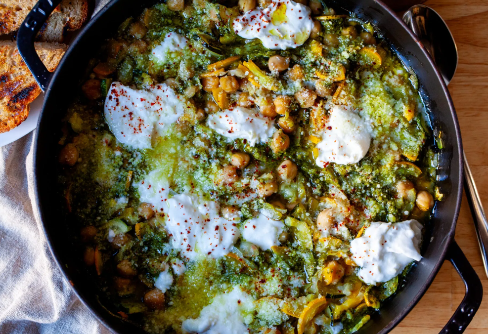
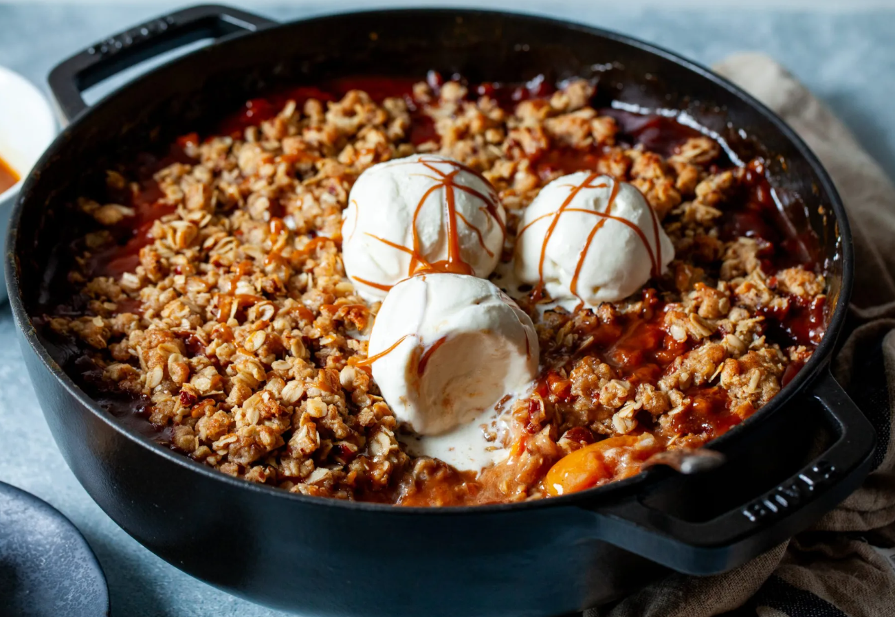
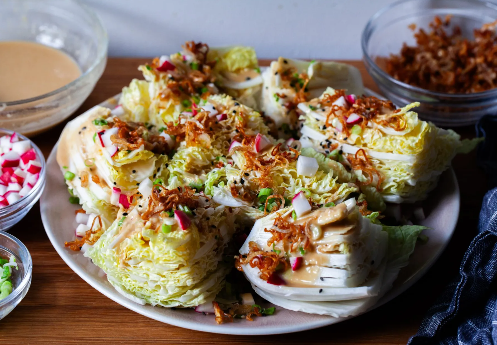

Here you can share all your ideas or just write something
Our Latest Posts

Braised chickpeas
Last summer, when my younger child joined my older child at sleepaway camp for a month for the first time, leaving us unmoored and a little restless, we made a list of restaurants we’d been meaning to try and friends we don’t see enough and took this task on like it was our job. I barely cooked once. By the end of the third week....

Caramel peach crisp
Its story begins, as so many of my headnotes do, with a grievance, which is that fruit crisp recipes often don’t work as well as they should, because the nutty oat and brown sugar toppings often overcook or burn before the fruit underneath them has a chance to cook to bubbly pie-like perfection...

Napa cabbage wedge
If you were to make a multi-part Venn diagram combining my favorite salad things, you could nestle this right in the center. It’s one part wedge salad, the fork and steak knife kind, something I am so into I talked my podcast co-host Kenji (okay, it wasn’t hard) into dedicating a whole episode to it...